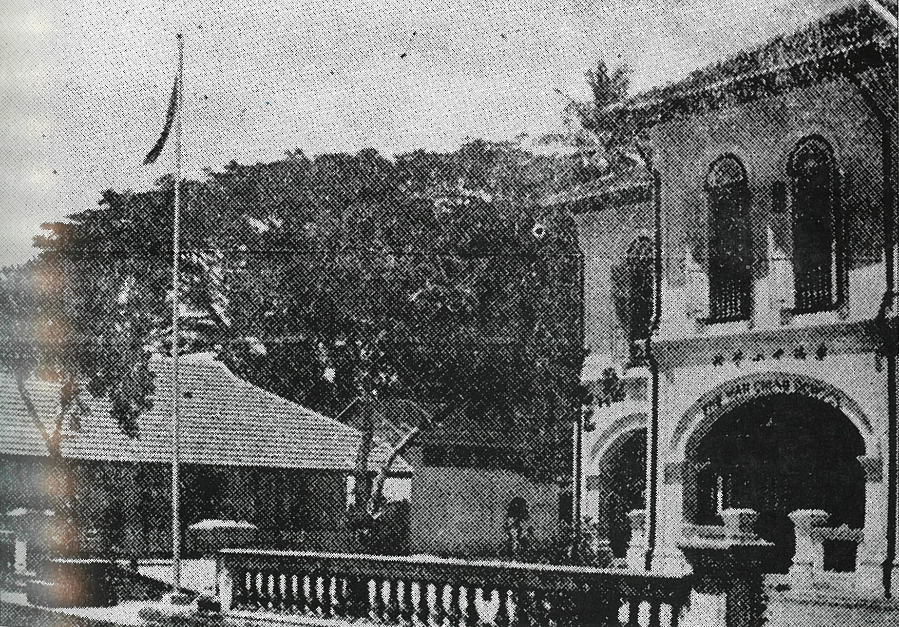
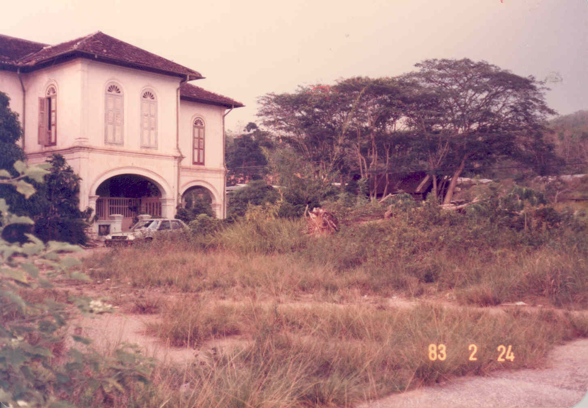
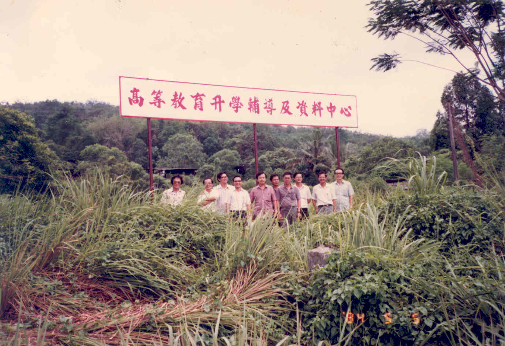
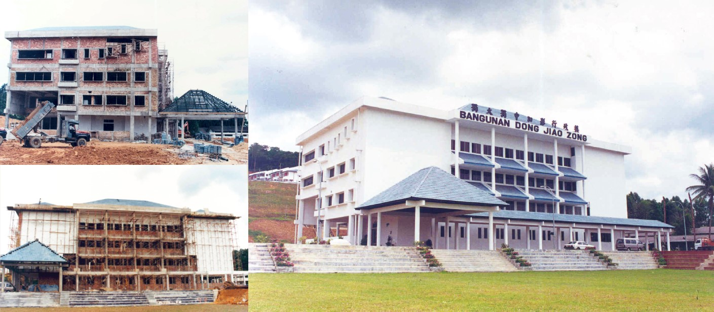
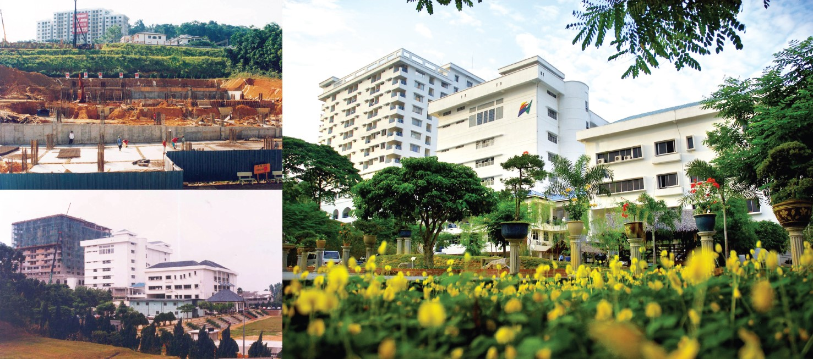

厘清加影华教山岗土地拥有权
本期焦点
正当“董总华教综合大厦”如火如荼筹建之际，董教总教育中心（非营利）有限公司于2023年5月19日委托律师发函，声称董总“非法侵占（unlawfully encroach）”其土地，并要求“立即停止施工（immediately cease and desist）”，否则将采取法律行动。
由于董教总教育中心（非营利）有限公司的指控与事实不符，意图迷惑视听，因此本期焦点将厘清这片土地的来龙去脉。
华侨学校的由来
19世纪初，加影只不过是一个弹丸小镇，人烟稀少。除了市内三条大街和一条中街外，周边地区都显得荒凉，但随着锡矿的发现，华人逐渐迁移加影谋生，人口逐渐增加。
兴学办校，热爱民族教育是我国华人的共同愿望。尽管社会经济条件贫乏，但华社对于教育的重视和追求却从未动摇，且深知，唯有通过坚持办学、培育英才，才能为国家的未来奠定坚实的基础。
1909年，一所名为文华学校的小规模华校在加影市内创立，这便是育华学校的前身。
1911年，虽然加影风气未开，经济也不发达，不过当时的侨领依然坚持办学信念，致力于培育优秀人才，于是便召集众人于1912年创办华侨学校。
文华和华侨学校分别由两帮人所主持，即福帮与客帮和粤帮。
当时加影的经济、文化和发展较为落后，人口也有限，所以在1916年左右有人建议两校合并，放弃原有的两校校名，并改为“育华学校”。惟当时的思想主义、帮派关系和客观环境影响，产生意见分歧，以致有关合并计划胎死腹中。
华侨学校声名远播
尽管合并计划告吹，但华侨学校以无校舍为怀，于是建校舍之念油然而生。1919年，加影一名富翁吴义的后裔念及华教乃民族千秋大业，献议将其先人遗下的洋楼和四周园地出让。董教方认为，这座建筑物具备建校舍的良好条件，因此商议变卖空地，在众人合力筹资下，将吴氏产业购下，奠定了华侨学校的基础。
1930年代，加影华侨学校礼聘中国颇具盛名的教育家胡一声出任校长。由于受到五四运动和新教育改革的影响，他在华侨学校落实新教育方案，实行“教、学、做”和推行董教学三结合的主张，支持思想开放，学术自由。从此，华侨学校声名远播，来自全马各地，慕名而来的学子众多。当时的弹丸小镇，已是闻名全马。
1940年代设有幼稚班、下午班、小学部、初中部、高中部、师范部，全校七百余人，来自新加坡和马来亚半岛各地，教师30余位，是当时全马最大的学府之一。
华侨学校数次停办
1939年爆发第二次世界大战，日军在1941年12月8日凌晨登陆马来半岛北端吉兰丹哥打峇鲁，长驱直入，英军全线溃败，损失惨重，日军从入侵到占领马来亚只用了55天。
战火蔓延、生灵涂炭、民不聊生，华侨学校也逃不过被迫停办的命运。尔后，日军为歌颂大东亚共荣圈，佯作复办华侨学校，实为以日语为主的学校。
1945年日本战败，马来亚光复，在校董和校友的支持下，复办华侨学校。
战后各行各业百废待兴，华侨学校也得以从废墟中重整昔日雄风，准备发展成为一间高等学府。华侨学校在所购得“华教山”的八英亩地段，即现今董总行政部所在地，兴建一座由星马企业家胡文虎捐助的“虎豹大礼堂”。
1946年到1948年是战后华侨学校的全盛时期，学生思想受到反殖民主义洪流的冲击，鼓吹反殖民，支持倾左运动，逐渐蔓延全国，引起英殖民政府注意。1948年，英殖民政府宣布马来亚进入紧急状态，加影华侨学校首当其冲，大部分师生被逮捕或分批遣送回中国。
加影华侨学校再度停办，而“华教山”的计划也因此未能展开。
华侨学校于1948年6月被迫停办不久后，即遭英军征用作兵营。受到紧急法令影响，该校的董事部已经瘫痪，导致学校陷入无人管理状态。1957年，国内局势逐渐趋于平稳，董事部代表会英籍雪州教育局局长，讨论交回该校管理权予旧董事会等问题。
为了具体回应加影华社之支持，华侨学校原有董事会便于1960年召集埠众大会，商议校产处理事宜。大会经过协商后，终于成立“华侨学校产业受托会”，以确保校产得到妥善管理。
1978年由加影八个华人社团，即乌鲁冷岳商矿公会、乌鲁冷岳福建公会、乌鲁冷岳广东会馆、乌鲁冷岳客家公会、加影广东义山公会、加影善余俱乐部、加影民生体育会和加影育华学校校友会，重组成立新的“华侨学校产业受托会”（简称“产业受托会”），接管学校的资产。后来，受托会又加入锡米山华小校友会而组成九大社团。
当时社会和客观环境严重打击产业受托会，其成员年纪迈老，也不敢贸然重新复办华侨学校，在财力、物力和人力受限下，也没有人登高一呼号召重建校园。
无可奈何下，他们只能保住校产，不敢发展。被迫停办的华侨学校留下一片荒芜的校地，加影从此失去了一所学校。
征用危机
1978年，华侨学校位于“华教山”校地被雪州政府征用，拟在此兴建廉价房屋，此举给加影华社带来极大冲击。
当时，乌鲁冷岳县华社纷纷反对，要求政府归还校地。幸在产业受托会的领导策划下，配合舆论和多方力量，通过议员和政治人物协助，向州政府据理力争，终使政府顺应民意。雪州政府最终在1981年5月来函通知，将征用的校地批准归还产业受托会。
我国华社鉴于国内只有华小和华文中学，缺乏以母语教学的大专学院。于是，为实现民族教育的完整体系，在董教总领导下，成立独立大学有限公司（以下简称“独大”），向政府申办独立大学。
1974年，为了响应董教总倡办独立大学的号召，产业受托会在征求加影九大华团的同意后，毅然将校产“华教山”地段租予独大为期三十年，作为申办独立大学的校址。
1978年，政府宣布拒绝独立大学申办。独大理事会议决采取法律行动，在1980年正式入禀吉隆坡高庭，起诉政府驳回独立大学的申办。然而，联邦法院于1982年7月6日宣判独大上诉失败，导致创办独立大学的心愿最终未能实现。
献地独立大学有限公司
上诉案失败后，独大成立七人小组研究发展华侨校地。经过各方意见后，七人小组认为独大应与董教总全国华文独中工委会相互配合，展开升学辅导工作、师资培训、教育与文化中心，积极贡献民族教育。
于是，独大决定租用华侨校地的“华教山”地段，先建立一所“高等教育升学辅导及资料中心”（较后易名为“董教总教育中心”）。
1984年7月，独大特别常年大会议决，以产业受托会名义向加影县议会提呈第一期建筑蓝图，兴建一座楼高四层的“独大独中加影行政楼”。
经过多年努力，独大独中加影行政楼的图测终于在1986年12月获得批准。
为了一劳永逸解决未来可能出现的法律问题，独大遂要求产业受托会将“华教山”地段转名予独大。
华侨学校产业受托会综合了加影九个华人社团（即成立华侨产业受托会八个华团，加上锡米山小学校友会）的意见，1988年6月10日致函独大表示，原则上同意把“华教山”地段转名，其条件如下：
- 有关校地只准作为发展民族教育用途；
- 受托会需有适当的代表人数参与独立大学有限公司理事会；
- 不论任何情况下，校地不能被转让、变卖或抵押；
- 万一该建设计划告吹或半途而废，独立大学有限公司应无条件将校地交回产业受托会；
- 行政楼中设一适当部分以表扬华侨学校先贤的办学精神；
- 地契转名后立即动工。
1991年4月22日正式完成土地转名手续。
1991年6月1日，董总与独大签署租用上述土地合约，并在该土地兴建“董教总教育中心”。有关土地租约期限为三十年，三十年后可以再延长三十年。
三机构申办新纪元学院
1994年3月24日，董总、教总和独大联合成立董教总教育中心（非营利）有限公司（简称“非营利公司”），同时进行申办新纪元学院。
“董教总教育中心”的第一期建筑工程于1994年建竣，即四层楼的“独大独中加影行政楼”，董总是行政楼的业主。
行政楼作为董教总华文独中工委会行政部及独大秘书处的办公室，其中第三楼的三零二会议室则交由产业受托会使用，作为“华侨学校纪念室”。这是为了遵循当年将校产转让给独立大学时的条件之一。
1997年7月1日，非营利公司向董总租用第三和第四楼层作为新纪元学院的办校校址，并签署租约，每月付两千五百令吉予董总作为维持费。
1996年董总再次发起全国筹款运动，兴建“董教总教育中心”第二期建筑工程，一座十三层的“饮水思源”宿舍楼和一座七层的教学楼。1999年10月2日动工，2001年杪建竣，2002年初启用。
华侨学校原址因地势犹如小山丘被称为“华侨山岗”。由于董总、教总、独大和新纪元大学学院坐落在这片土地，所以“华侨山岗”亦称为“华教山岗”。
结语
华侨学校自1912年创办至1948年被迫停办，董教师生和在地民众发挥坚毅的民族精神，通过设置产业，建设教育，自力更生。停办后，校产幸由加影华团维护管理。虽无法复办华侨学校，惟依旧秉承先贤的办学精神，同时把校地献给独立大学有限公司发展民族教育，要把这片土地发展民族教育用途。这才造就让董总、教总及独大三大机构聚集在这片土地上，共同并肩致力在维护与发展华文教育事业的因缘。
综上所述，上述地段的地契和租约，皆有法律文件证明其土地拥有权和使用权。职是之故，独立大学有限公司为此地段之拥有者，董总是建筑物的业者及此地段的使用和管理者，而董教总教育中心（非营利）公司及新纪元大学学院在此地段的身份，原先就是由三机构所拥有和管理下的使用者。各者在这片土地的身份和关系一目了然，不容混淆。